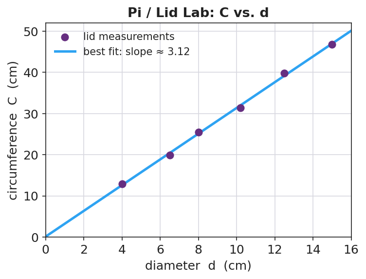

Unit: Math in Science — Lesson 02: Graphing and Interpreting Data
Phenomenon
Your teacher claims that for any round lid, the distance around it and the distance across it are locked together by the same multiplier — big lid or small lid, the same number. Today you will catch that multiplier on a graph.

Driving Question
What single number connects the circumference of a circle to its diameter, and how does a graph reveal it?
Notice & Wonder
As the lids get bigger across, what happens to the distance around them? What shape do you predict the graph will be?
Initial Model
Sketch the graph you expect before measuring. Label the axes (which quantity do you choose, and which responds?). Predict in one sentence what the line will look like and whether it passes through the origin.
Investigate
The dots are real lid measurements: circumference (y) versus diameter (x). Drag the slope slider to swing the best-fit line until it passes through the cloud with about as many points above as below. Read the slope — it should land near π ≈ 3.14.
Sum of squared errors (smaller = better fit): 0 · Predicted C for a 20 cm lid: 0 cm
Make It Make Sense
- A graph plots distance (y) versus time (x) for a walker. Which variable is independent and which is dependent?
- A best-fit line rises 6 units over a run of 3 units. What is its slope?
- Two lines are drawn on the same axes. Line A is steeper than Line B. What does the steeper slope mean about how fast y changes?
Stuck? Sentence frame
"When the ___ goes up by ___, the ___ goes up by ___, so the slope is ___."
Key Vocabulary (max 3)
- independent variable — the quantity you choose or change; it goes on the x-axis (here, the lid's diameter)
- dependent variable — the quantity that responds and is measured; it goes on the y-axis (here, the circumference)
- slope — the rise divided by the run of a line (Δy / Δx); for a line through the origin it is the proportionality constant
Revise Your Model
Compare the graph you predicted to the graph you measured. Was it a straight line? Did it pass through the origin? Rewrite the locked-together rule as an equation using your slope: C = ____ × d.
Return to the Phenomenon
State the locked-together rule in one sentence with the word slope. Target: "Circumference = slope × diameter, and the slope is π ≈ 3.14, so C = πd — the same multiplier for every lid."
Exit Ticket + Closing Reflection
- A class plots a stretched spring's length (cm) versus the mass hung on it (g). The line is straight and starts at 12 cm when 0 g is hung.
(a) Which is the independent variable and which is the dependent variable? (b) The line rises 8 cm over a run of 200 g — what is the slope, including units? (c) Explain in plain words what that slope tells you about the spring. - Reflection: Whose idea in your group changed how you drew or read the line today? Name them.